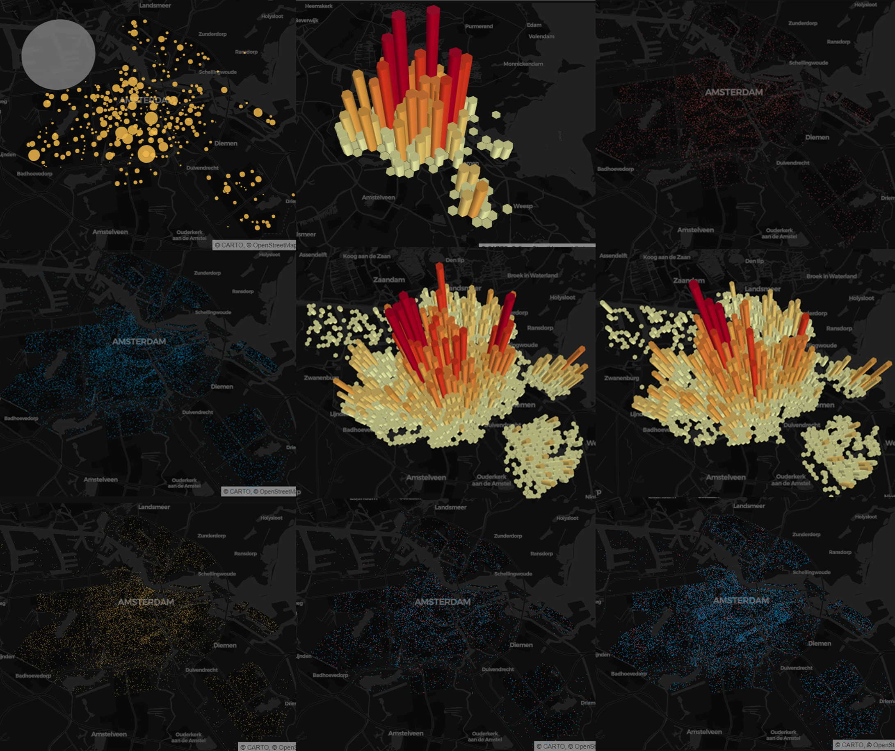

About Me
Portfolio
Athletics
Marie Overing
A 3D mesh model of Science hall using Structure-from-Motion
Using Meshroom and CloudCompare software
Dutch Elections Pydeck Visualizations

Measuring Centralities with osmnx and networkx